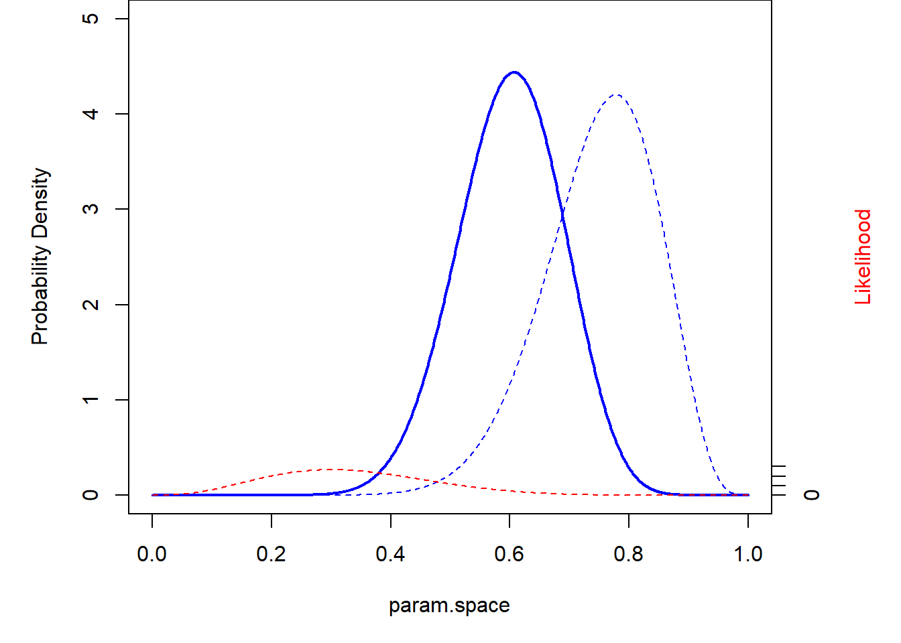
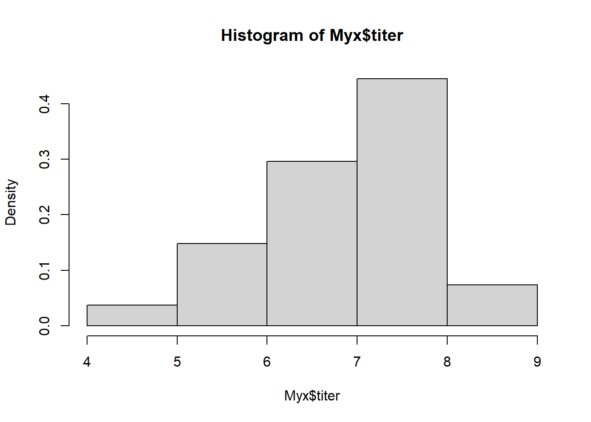
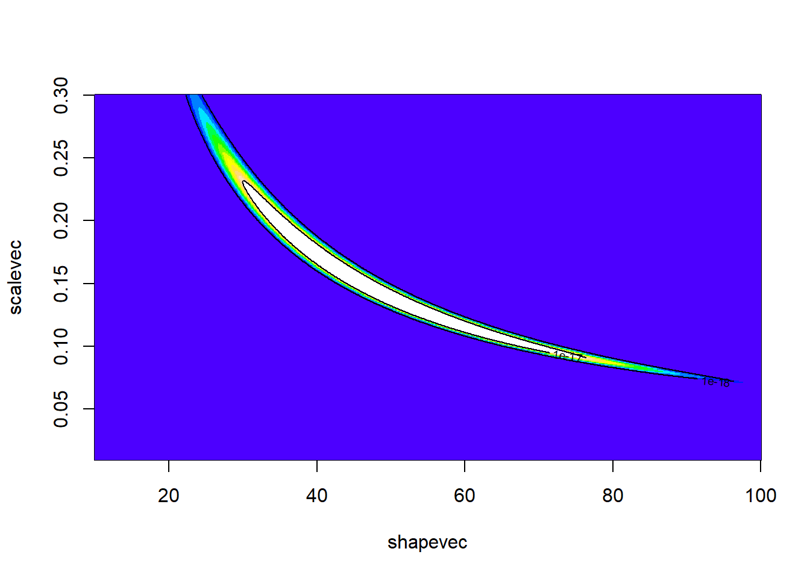

Bayesian Analysis #1: Concepts
NRES 746
September 27, 2016
Bayesian analysis is likelihood-based, and follows naturally from our previous discussions. The difference is that we are no longer interested in the maximum likelhood estimate and the properties of maximum likelhood estimators. We are now interested in using the likelihood function to update our degree of belief in all possible parameter sets. Effectively, we want a joint probability distribution that represents our degree of belief in all possible sets of parameter values after we have observed some relevant data.
Play with binomial/beta (conjugate prior)
Let’s imagine we know N (N, the number of independent trials, is fixed), but we want to estimate p. Let’s assume we have no prior information, so that any value of p is equally likely.
Set the prior
To set the prior, let’s assume a uniform distribution between 0 and 1:
curve(dunif(x),ylim=c(0,2),col="red")
#hist(runif(10000),freq=F,ylim=c(0,2),col="red")An alternative way to specify this uniform (flat) prior is to use the beta distribution, with both shape parameters set to 1
curve(dbeta(x,1,1),ylim=c(0,2),col="red")#hist(rbeta(10000,1,1),freq=F,ylim=c(0,2),col="red")Conjugate prior
Why choose the beta distribution here? The answer is that the beta is the conjugate prior for the p parameter in the binomial distribution. This makes Bayesian estimation easy and straightforward, as we will see!
Definition: conjugate prior
A conjugate prior is a distribution that matches the data-generating model- that is, it has the same form as the likelihood function. In this way, the distributional form of the posterior distribution for a parameter is the same as the prior distribution for that parameter (although the shape of the distribution will change). We will come back to this!
Worked example
Let’s work through an example. Let’s imagine the same frog-call survey we have imagined before. We know the site is occupied. After visiting the site 10 times, we detected the frog (heard its call) 3 times out of 10 total visits. We are interested in determining the detection probability.
We know the likelihood of the data across parameter space. So now we have both a prior distribution for our parameter of interest, as well as a likelihood surface.
data = 3
param.space <- seq(0,1,by=0.001)
likelihood <- dbinom(data,size=10,prob=param.space)
par(mai=c(1,1,0,1))
curve(dbeta(x,1,1),ylim=c(0,2),col="blue",ylab="Probability density",xlab="param.space")
points(param.space,likelihood*5,type="l",col="red",lwd=2)
axis(4,at=seq(0,2,by=0.4),labels = seq(0,0.5,by=.1))
mtext("Likelihood", side=4, col="red",line=3)
Recall that the likelihood curve is NOT a probability distribution. It does not generally sum to 1! In Bayesian analyses, we translate the likelihood to a probability distribution using Bayes rule!!
\(Prob(Model|Data) = \frac{Prob(Data|Model)\cdot Prob(Model))}{Prob(Data)}\)
The likelihood is just the \(Prob(Data|Model)\) term…
What is the probability of the data? Well, it’s just the sum of the probability of the data across all possible parameter values (parameter space). Really, \(Prob(Data)\) can be seen as a normalizing constant that is used to convert the numerator of Bayes rule into a probability distribution. As always, let’s do it first by brute force…
prior <- dbeta(param.space,shape1=1,shape2=1)
#prior
## weight the data likelihood by the prior
weighted.likelihood <- likelihood*prior # Numerator for Bayes rule
## compute normalization constant
normalization.constant <- sum(weighted.likelihood)
## Posterior!!
posterior <- weighted.likelihood/normalization.constant # this is Bayes' rule!
## Plot it out!
par(mai=c(1,1,0,1))
plot(param.space,prior,ylim=c(0,5),type="l",lwd=1,lty=2,col="blue",ylab="Probability Density",xlab="param.space")
points(param.space,posterior*length(param.space),type="l",col="blue",lwd=2,lty=1) # convert posterior to probability density
points(param.space,likelihood*5,type="l",col="red",lwd=1)
axis(4,at=seq(0,2,by=0.4),labels = seq(0,0.5,by=.1))
mtext("Likelihood", side=4, col="red",line=3)
Notice that the shape of the posterior looks a lot like the shape of the likelhood surface. What this says to us is that the prior has been overwhelmed by the information content of the data (as summarized by the likelihood surface).
What if we have a more informative prior?
prior <- dbeta(param.space,shape1=15,shape2=5)
#prior
## weight the data likelihood by the prior
weighted.likelihood <- likelihood*prior
## compute normalization constant
normalization.constant <- sum(weighted.likelihood)
## Posterior!!
posterior <- weighted.likelihood/normalization.constant
## Plot it out!
par(mai=c(1,1,0,1))
plot(param.space,prior,ylim=c(0,5),type="l",lwd=1,lty=2,col="blue",ylab="Probability Density",xlab="param.space")
points(param.space,posterior*length(param.space),type="l",col="blue",lwd=2,lty=1)
points(param.space,likelihood*5,type="l",col="red",lwd=1)
axis(4,at=seq(0,2,by=0.4),labels = seq(0,0.5,by=.1))
mtext("Likelihood", side=4, col="red",line=3)
What does this tell us?
What about if we have more data? Let’s imagine we visited 10 occupied ponds and observed the following data:
3, 1, 6, 2, 3, 2, 6, 1, 3, 3
moredata <- c(3, 1, 6, 2, 3, 2, 6, 1, 3, 3)
## prior
prior <- dbeta(param.space,shape1=15,shape2=5)
## likelihood
likelihood <- sapply(param.space,function(t) prod(dbinom(moredata,size=10,prob=t)))
## weight the data likelihood by the prior
weighted.likelihood <- likelihood*prior
## compute normalization constant
normalization.constant <- sum(weighted.likelihood)
## Posterior!!
posterior <- weighted.likelihood/normalization.constant
## Plot it out!
par(mai=c(1,1,0,1))
plot(param.space,prior,ylim=c(0,10),type="l",lwd=1,lty=2,col="blue",ylab="Probability Density",xlab="param.space")
points(param.space,posterior*length(param.space),type="l",col="blue",lwd=2,lty=1)
points(param.space,likelihood*1e9,type="l",col="red",lwd=1)
axis(4,at=seq(0,6,by=1),labels = seq(0,6e-9,by=1e-9))
mtext("Likelihood", side=4, col="red",line=3)
What about a super informative prior??
prior <- dbeta(param.space,shape1=150,shape2=50)
#prior
## weight the data likelihood by the prior
weighted.likelihood <- likelihood*prior
## compute normalization constant
normalization.constant <- sum(weighted.likelihood)
## Posterior!!
posterior <- weighted.likelihood/normalization.constant
## Plot it out!
par(mai=c(1,1,0,1))
plot(param.space,prior,ylim=c(0,15),type="l",lwd=1,lty=2,col="blue",ylab="Probability Density",xlab="param.space")
points(param.space,posterior*length(param.space),type="l",col="blue",lwd=2,lty=1)
points(param.space,likelihood*5,type="l",col="red",lwd=1)
axis(4,at=seq(0,2,by=0.4),labels = seq(0,0.5,by=.1))
mtext("Likelihood", side=4, col="red",line=3)
Okay, now let’s do it the more mathematically elegant way! When we work with a conjugate prior, the updating process is easy. The posterior distribution for the p term in the above example can be computed by:
\(Beta(shape1=prior+k,shape2=prior+(N-k))\)
Let’s do the same thing, now using the conjugate prior method…
### PRIOR
prior_beta <- c(shape1=1,shape2=1)
curve(dbeta(x,prior_beta['shape1'],prior_beta['shape2']),ylim=c(0,5),ylab="Prob Density",col="blue",lwd=1,lty=2,xlab="param.space")
### POSTERIOR
curve(dbeta(x,prior_beta['shape1']+data,prior_beta['shape2']+(10-data)),ylim=c(0,4),ylab="Prob Density",col="blue",lwd=2,lty=1,xlab="param.space",add=T)And again, this time with an informative prior!
### PRIOR
prior_beta <- c(shape1=15,shape2=5)
curve(dbeta(x,prior_beta['shape1'],prior_beta['shape2']),ylim=c(0,5),ylab="Prob Density",col="blue",lwd=1,lty=2,xlab="param.space")
### POSTERIOR
curve(dbeta(x,prior_beta['shape1']+data,prior_beta['shape2']+(10-data)),ylim=c(0,4),ylab="Prob Density",col="blue",lwd=2,lty=1,xlab="param.space",add=T)And the super informative prior??
### PRIOR
prior_beta <- c(shape1=150,shape2=50)
curve(dbeta(x,prior_beta['shape1'],prior_beta['shape2']),ylim=c(0,15),ylab="Prob Density",col="blue",lwd=1,lty=2,xlab="param.space")
### POSTERIOR
curve(dbeta(x,prior_beta['shape1']+data,prior_beta['shape2']+(10-data)),ylim=c(0,15),ylab="Prob Density",col="blue",lwd=2,lty=1,xlab="param.space",add=T)
Bayesian point estimate
One of the differences between the MLE and the Bayesian paradigm (although both use likelihood as a way to summarize the information content of the data) is that the point estimate is not the maximum of the posterior distribution (in MLE, we by definition try to find the parameter value that maximizes the likelihood function) but the mean of the posterior distribution. That is, it is the expected value of that parameter…
Imagine you had a skewed posterior distribution that looked something like this:
curve(dlnorm(x,4,1),from=0.001,to=200,ylab="prob density") # use a lognormal distribution for example of skewed dist...
Where is the mode? Where is the mean?
param.space2 <- seq(0.001,200,length=10000)
skewed.posterior <- dlnorm(param.space2,4,1)
mean <- mean(rlnorm(10000,4,1))
mode <- param.space2[which.max(skewed.posterior)]
plot(param.space2,skewed.posterior,type="l",ylab="prob density")
abline(v=c(mean,mode),col=gray(0.5),lwd=3,lty=2) # add to plotWhat about for the first worked example? Is there a big difference between the mean and the mode?
graphics.off()
### POSTERIOR
posterior <- dbeta(param.space,1+data,1+(10-data))
mean <- mean(rbeta(10000,1+data,1+(10-data)))
mode <- param.space[which.max(posterior)]
plot(param.space,posterior,type="l",col="blue",lwd=2)
abline(v=c(mean,mode),col=gray(0.5),lwd=3,lty=2) # add to plotDiscussion question
In MLE, we by definition try to find the parameter value that maximizes the likelihood function. Why don’t we use the mean of the likelihood function? In Bayesian analysis, why don’t we use the mode of the posterior distribution?
Bayesian parameter uncertainty
We often call Bayesian confidence intervals credible intervals to distinguish from their frequentist analog. Bayesian (e.g., 95%) credible intervals can be interpreted in the way you probably have always wanted to interpret frequentist (95%) confidence intervals. It will probably feel satisfying, but a little dirty at the same time!
You are 95% sure that the true parameter value is between the lower and upper bound!!!
Let’s try this:
### POSTERIOR
curve(dbeta(x,1+data,1+(10-data)),ylim=c(0,4),ylab="Prob Density",col="blue",lwd=2,lty=1,xlab="param.space")
### CREDIBLE INTERVAL
credible.interval <- qbeta(c(0.025,0.975),1+data,1+(10-data)) # get the credible interval
abline(v=credible.interval,col=gray(0.5),lwd=3,lty=2) # add to plot
What if there is no nice easy conjugate prior?
One of the reasons Bayesian analysis was less common historically was that there were no mathematically straightforward ways to do the analysis. There still are not BUT we have fast computers and computational algorithms. Basically, we can use various forms of more-or-less brute force computation to do most Bayesian analyses.
Let’s start with the most brute of brute-force methods:
The brute force method
For continuity we will continue the myxomatosis dataset. Recall that we are estimating the shape and scale parameters of the Gamma distribution that describes the virus titer in Australian rabbits for the lowest-grade infections.
library(emdbook)
MyxDat <- MyxoTiter_sum
Myx <- subset(MyxDat,grade==1)
head(Myx)## grade day titer
## 1 1 2 5.207
## 2 1 2 5.734
## 3 1 2 6.613
## 4 1 3 5.997
## 5 1 3 6.612
## 6 1 3 6.810Recall the histogram looks like this:
hist(Myx$titer,freq=FALSE)
And we are trying to fit a Gamma distribution to these data:
hist(Myx$titer,freq=FALSE)
curve(dgamma(x,shape=40,scale=0.15),add=T,col="red")
We already have a likelihood function for this problem! Note that we are now looking at real likelihoods and not log likelihoods!
GammaLikelihoodFunction <- function(params){
prod(dgamma(Myx$titer,shape=params['shape'],scale=params['scale']))
}
params <- c(40,0.15)
names(params) <- c("shape","scale")
params## shape scale
## 40.00 0.15GammaLikelihoodFunction(params)## [1] 2.906766e-22And we recall that the 2D likelihood surface looks something like this:

Now let’s use this 2-D likelihood surface as a jumping-off point for a brute-force Bayesian solution to this problem!
First we need to set priors for the shape and scale parameters… For example, we could set uniform distributions for these parameters. For this example, let’s imagine a prior in which all pixels in the above image are equally likely:
pixelArea <- 0.0001 # for determining probability densities
##############
# define the prior probability surface across this grid within parameter space
##############
prior2D <- matrix(1, nrow=length(shapevec),ncol=length(scalevec)) # initialize prior
prior2D <- prior2D/length(prior2D)
############
# Visualize the 2-D prior distribution
############
image(x=shapevec,y=scalevec,z=prior2D,zlim=c(0,0.001),col=rainbow(10))
Okay, not very interesting!
But now we have the raw information we need to apply Bayes’ rule!
weighted.likelihood <- prior2D * likelihood2D # numerator of Bayes rule
normalization.constant <- sum(weighted.likelihood) # denominator of Bayes rule
posterior2D <- weighted.likelihood/normalization.constant
############
# Visualize the 2-D posterior distribution
############
image(x=shapevec,y=scalevec,z=(posterior2D/pixelArea),zlim=c(0,5),col=topo.colors(12))
contour(x=shapevec,y=scalevec,z=(posterior2D/pixelArea),levels=c(1:4),add=T,drawlabels=FALSE)
Now we can use this posterior distribution to get our point estimates and parameter uncertainty estimates. We could just take the 2d posterior distribution surface and draw the contour containing 95% of the probability density:
First let’s find the contour line below which only 5% of the probability density is contained:
possible.contours <- data.frame(contour = seq(0.13e-4,1e-4,length=100), quantile = NA)
i=1
for(i in 1:nrow(possible.contours)){
ndx <- which(posterior2D<possible.contours$contour[i],arr.ind = T)
possible.contours$quantile[i] <- sum(posterior2D[ndx])
}
head(possible.contours,10)## contour quantile
## 1 1.300000e-05 0.03484278
## 2 1.387879e-05 0.03803099
## 3 1.475758e-05 0.04110702
## 4 1.563636e-05 0.04417352
## 5 1.651515e-05 0.04751733
## 6 1.739394e-05 0.05046922
## 7 1.827273e-05 0.05369474
## 8 1.915152e-05 0.05674380
## 9 2.003030e-05 0.05980036
## 10 2.090909e-05 0.06315809From here we can see that the posterior probability 1.739394e-05 encloses 95% of the probability density
q95 <- 1.739394e-05
image(x=shapevec,y=scalevec,z=posterior2D,zlim=c(0.5e-11,5e-4),col=topo.colors(12))
contour(x=shapevec,y=scalevec,z=posterior2D,levels=q95,add=T,lwd=3,col="red",drawlabels=FALSE)
Where is our point estimate? Let’s find the posterior mean and mode!
image(x=shapevec,y=scalevec,z=posterior2D,zlim=c(0.5e-11,5e-4),col=topo.colors(12))
contour(x=shapevec,y=scalevec,z=posterior2D,levels=q95,add=T,lwd=3,col="red",drawlabels=FALSE)
meanshape <- sum(shapevec*posterior2D)
meanscale <- sum(scalevec*posterior2D)
points(meanshape,meanscale,pch=20,cex=2,col="red")We can also plot out the marginal posterior distributions for the parameters separately. For example, the probability that the shape parameter falls within a given range, regardless of the other variable:
marginal.dist.shape <- apply(posterior2D,1,mean)
plot(shapevec,(marginal.dist.shape/sum(marginal.dist.shape))/0.1,type="l",lwd=2,col="blue",ylab="probability density",main="Posterior probability")
abline(v=meanshape)marginal.dist.scale <- apply(posterior2D,2,mean)
plot(scalevec,(marginal.dist.scale/sum(marginal.dist.scale))/0.001,type="l",lwd=2,col="blue",ylab="probability density",main="Posterior probability")
abline(v=meanscale)
meanshape## [1] 48.08924meanscale## [1] 0.1549478And from here we can compute the posterior mean and Bayesian credible intervals.
How do our Bayesian estimates compare with the maximum likelihood estimates?? (shape = 49.3666607 scale = 0.1402629)
We can also sample directly from this 2-D posterior distribution:
SampleFromPosterior <- function(n){
shape <- rep(shapevec,times=length(scalevec))
scale <- rep(scalevec,each=length(shapevec))
jointparams <- data.frame(shape=shape,scale=scale)
probs <- as.vector(posterior2D)
samples <- sample(c(1:length(probs)),size=n,replace=TRUE,prob=probs)
jointparams[samples,]
}
samples<-SampleFromPosterior(n=10000)
par(mfrow=c(3,2))
plot(samples,col=1:10000)
plot(samples,type="l")
plot(ts(samples[,1]))
plot(ts(samples[,2]))
hist(samples[,1],40)
hist(samples[,2],40)par(mfrow=c(1,1))Markov Chain Monte Carlo
Now in many cases, we simply won’t have the computational power to partition our parameter space into discrete pixels and completely evaluate the posterior probability for all n-dimensional pixels in that space. In these cases, we tend to harness ingenious algorithms known as Markov-Chain Monte Carlo (MCMC). This is the focus of the next lecture.